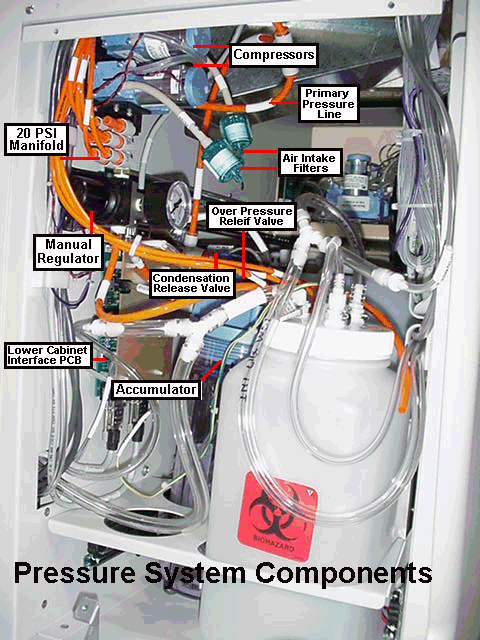
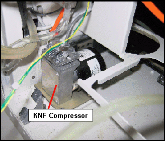
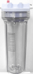
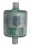
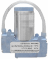
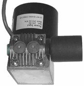
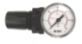
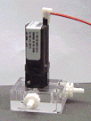

Pressure System Operating Principles
Purpose
This document details the operating principles for the pressure system.
Module Function
On-board compressors pressurize air for all devices with air operated valves or cylinders. The system uses air at two different pressures.
- Primary pressure at 32 to 35 psi: Monitored and powered on and off by the lower cabinet interface PCB .
- Reagent storage module gripper
- Analytical module ejector plate
- Substrate door closure
- Reagent storage pack waste door
- Secondary pressure at 20 psi: Controlled by an adjustable regulator.
- Sample pick-and-place (vessel ejection)
- Incubator pick-and-place (vessel ejection)
- Wash pick-and-place (vessel ejection)
- Bulk RV feeder (orientation and escapement cylinders)
- Substrate door - Open
- Substrate door up - Hold open (instrument waiting for bottle replacement)
- Substrate door - Close
Locations
The main pressure system components are located in the lower left corner of the instrument behind the liquid waste container drawer:
- Air compressors
- Accumulator
- Pressure regulator
The associated valves and cylinders are located in these areas:
- Bulk vessel feeder module
- Reagent storage module
- Analytical module ejector arm
- Pick-and-place modules (three)
- Substrate module
Note: The main pressure system components are accessed and serviced most easily from the rear of the instrument.
Operational Overview
- When the accumulator air pressure drops below a specified level, two compressors are powered on.
- The pumps operate until a specific pressure level is reached, and then a pressures sensor powers off the compressors.
- Air consumed by the air cylinders in the instrument reduces the pressure in the accumulator.
- The compressors are powered on again. The cycle is repeated continuously during instrument operation.
- As moisture builds up in the accumulator, the accumulator is drained automatically. The accumulator is drained when the condensation release valve operates and air pressure within the accumulator forces water out into the solid waste container.
Component Locations - Pressure System with Hargraves Compressors

Component Locations - Pressure System with KNF compressor (if installed)

Component Functions
| Components | Description / Function |
|---|---|
| Accumulator
 |
Compressed air storage container. Air in this container is at system primary pressure. |
| Filter, Air
 |
Device that cleans intake air being drawn by the compressors. |
| Pump, Air (Hargraves Compressor)
 |
Diaphragm pump wthat converts air at atmospheric pressure into air at a higher pressure. (Quantity of two) |
| Pump, Air (KNF Compressor)
 |
Piston pump that converts air at atmospheric pressure into air at a higher pressure. (Quantity of one) |
| Regulator, Pressure
 |
Manual control for setting the regulated air pressure. |
| Sensor, Pressure | Electrical device that reads primary pressure and sends a voltage to software (where the signal is converted to pressure). Compressor power is controlled from this pressure reading. |
| Valve, Condensation Release
 |
Electromechanical device, which when operated, provides a path for moisture to be released from the accumulator. |
| Valve, Pressure Release | Mechanical device that allows excessive air pressure to automatically escape once the trip pressure is reached. This device is a safety device. |
Interacting Devices
The pressure system interacts with these devices:
- Analytical module wash arm ejector plate cylinder
- Bulk feeder inverting cylinder
- Bulk feeder non-inverting cylinder
- Bulk feeder dispenser cylinder
- Incubator pick-and-place eject cylinder
- Reagent storage module gripper
- Reagent storage module waste door
- Sample pick-and-place eject cylinder
- Substrate loader
- Wash pick-and-place eject cylinder